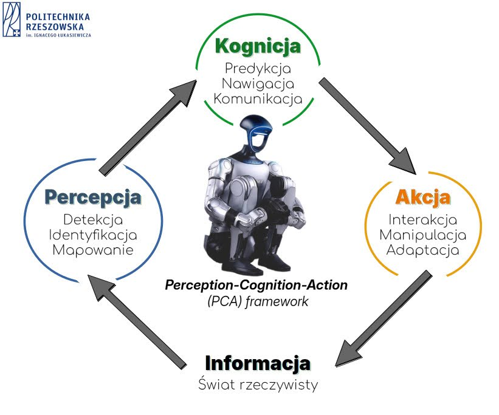
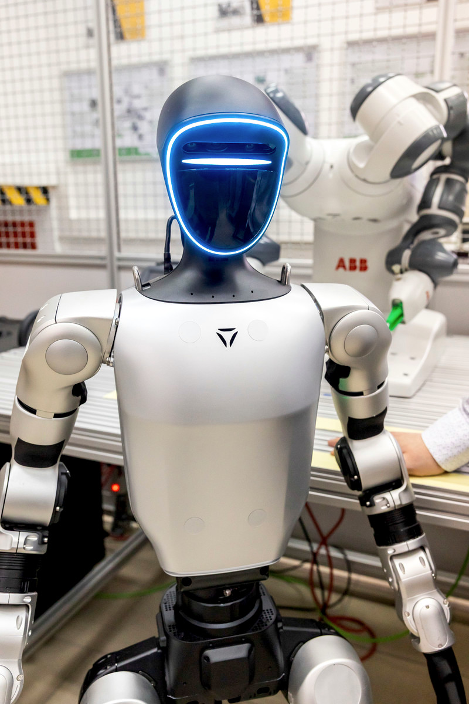
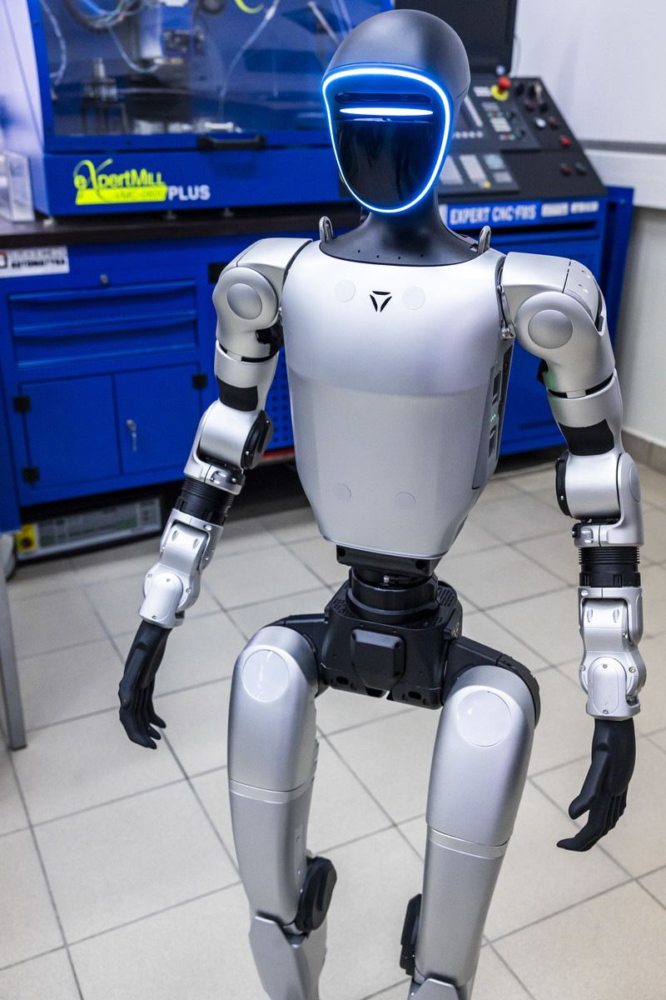
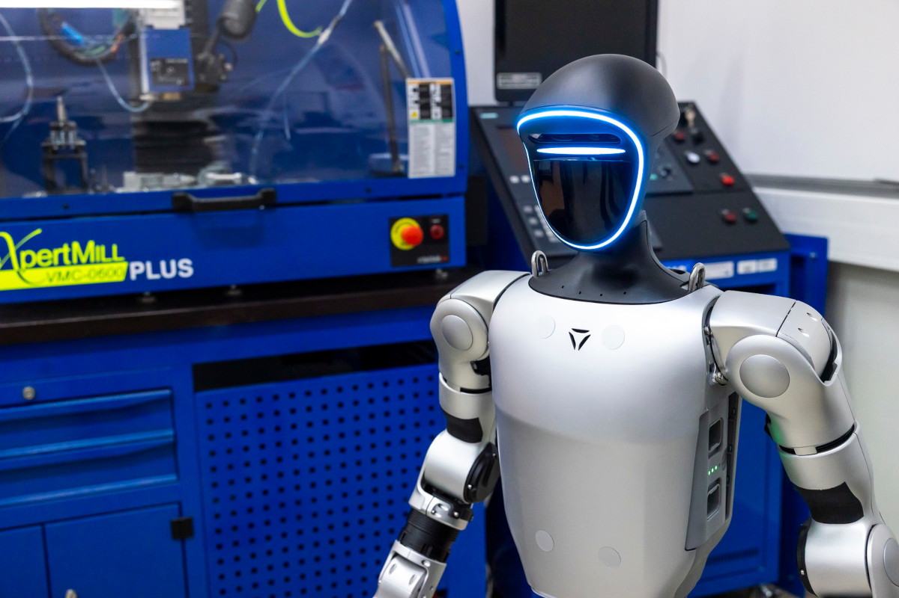

Human-centered AI Robotics Lab
3
zespoły PCA
8
warstw sensorycznych
24
ścieżki eksperymentów
Laboratorium Robotów Humanoidalnych
Projektujemy inteligentne systemy humanoidalne łączące percepcję, rozumowanie i działanie w jednym, responsywnym ekosystemie badań.
Laboratorium opracowuje samodzielnie dedykowane oprogramowanie w oparciu o pakiety ROS2, znacząco rozszerzając podstawowe możliwości robota humanoidalnego. Działamy w obszarach rehabilitacji, interakcji człowiek–robot oraz zastosowań przemysłowych — w tym intralogistyki, gdzie badamy potencjał robotów humanoidalnych jako mobilnych asystentów w środowiskach magazynowych i produkcyjnych.
Nowy w zespole? Zacznij od naszego WIKI, a potem odkryj aktywne obszary badawcze, scenariusze wdrożeń i aktualny pipeline eksperymentów poniżej.
Chcesz dołączyć do zespołu jako student lub studentka? Preferowany kontakt dla chętnych znajduje się w repozytorium studenckim ALF1-RZIT.
LIVE LAB PIPELINE
Perception → Cognition → Action
init
Ładowanie modułów sensor fusion…
sync
Aktywacja strumieni LiDAR + RGB-D.
plan
Model planowania ruchu oczekuje na scenariusz.
Status eksperymentów
Aktywne prototypowanie
Wysoka gotowość do iteracji: AI, teleoperacja, analityka ruchu.
Doświadczenie zaprojektowane jak nowoczesny produkt
Połączyliśmy narrację badawczą z interaktywną prezentacją kompetencji laboratorium — tak, aby użytkownik od razu rozumiał wartość i zakres naszych prac.
Perception Stack
Fuzja LiDAR, RGB-D, IMU i analizy afektywnej w jednej architekturze obserwacji otoczenia.
Cognition Engine
Łączenie world models, VLM i planowania zadań zorientowanego na człowieka.
Action & Embodiment
Manipulacja, teleoperacja i sterowanie ruchem w zamkniętej pętli decyzyjnej.
Roadmapa badań i wdrożeń
Od eksperymentów laboratoryjnych po scenariusze użycia w rehabilitacji, HRI i środowiskach przemysłowych.
Digital Twin
Symulacja ruchu, trening polityk i testy bezpieczeństwa w środowisku wirtualnym.
Adaptive AI
Wprowadzenie modeli VLM/LLM do planowania zachowań zależnych od kontekstu i emocji.
Assistive Robotics
Scenariusze rehabilitacyjne i wspomaganie codziennych czynności człowieka.
Intralogistyka
Wdrożenia robota humanoidalnego jako mobilnego asystenta w środowiskach magazynowych i produkcyjnych.
Field Validation
Walidacja prototypów w warunkach pół-rzeczywistych, z naciskiem na UX i bezpieczeństwo.
Framework PCA
Metodyka obiegu informacji w autonomicznych systemach humanoidalnych.

Unitree G1 w Laboratorium
Robot humanoidalny nowej generacji w działaniu



Zespoły Badawcze
Trzy komplementarne grupy realizujące cykl PCA
Zespół Percepcji
- Fuzja danych LiDAR 3D i wizji głębi
- Analiza afektywna użytkownika (DeepFace)
- Mapowanie przestrzeni i strefy proxemics
- Lokalizacja źródła dźwięku (8 mikrofonów)
Zespół Kognicji
- Modele zunifikowane UnifoLM-WMA-0
- Wdrażanie modeli VLM (Vision-Language-Action)
- Wnioskowanie LLM w czasie rzeczywistym
- Predykcja potrzeb i trendów emocjonalnych
Zespół Interakcji
- Transfer polityk ruchu Sim-to-Real (Isaac Lab)
- Manipulacja precyzyjna dłońmi Dex3-1
- Badanie stabilności (momenty do 90 Nm)
- Rehabilitacja wspomagana (Assist-as-needed)
Ekosystem Programistyczny
Laboratorium samodzielnie opracowuje dedykowane oprogramowanie w oparciu o pakiety ROS2, znacząco rozszerzając podstawowe możliwości robota. Nasz stack technologiczny obejmuje narzędzia AI, symulację, planowanie ruchu i przetwarzanie percepcji.
Zastosowania w Rehabilitacji
Robot jako asystent w terapiach neurologicznych i poznawczych
Rehabilitacja Ruchowa
Wsparcie po udarach mózgu oraz urazach układu nerwowego. Wykorzystanie modelu "assist-as-needed" w celu stopniowego przywracania mobilności.
Wsparcie Poznawcze
Trening neuropoznawczy w chorobie Alzheimera, Parkinsona oraz MCI. Stymulacja funkcji wykonawczych poprzez interakcję dialogową.
Intralogistyka i Przemysł
Robot humanoidalny jako mobilny asystent w środowiskach magazynowych i produkcyjnych
Intralogistyka
Badamy zastosowanie robotów humanoidalnych jako autonomicznych asystentów logistycznych — zdolnych do nawigacji po halach magazynowych, transportu komponentów oraz współpracy z systemami WMS. Kluczowym elementem jest opracowanie dedykowanych pakietów ROS2 umożliwiających integrację z infrastrukturą przemysłową.
Środowiska Przemysłowe
Prowadzimy badania nad adaptacją robota do wymagań przemysłowych: precyzyjne manipulowanie komponentami, inspekcja jakości wspomagana przez VLM oraz praca ramię w ramię z operatorem w środowiskach współpracy człowiek–robot (HRC). Własne oprogramowanie laboratorium znacząco rozszerza fabryczne możliwości platformy Unitree G1.
Unitree G1 U6 EDU
Platforma flagowa zintegrowana z jednostką pokładową NVIDIA Jetson Orin do zaawansowanych obliczeń krawędziowych AI.
Hardware
8-core ARM + NVIDIA Orin
Manipulacja
Dłonie Dex3-1 (12 DOF)
LiDAR 3D
Livox MID360 (FOV 360°)
Komunikacja
DDS / CycloneDDS